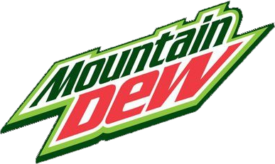

Comment nous soutenir ?
En tant que particulier
Même si nous acceptons l'aide d'entreprises, cela ne veut pas forcément dire que vous personnellement ne pouvez pas nous aider de même ! En tant que particulier, votre aide sera utilisée pour nous fournir en matériel pour la course, que ce soit pour la 4L elle-même ou tout ce qui est en plus, comme les frais d'inscriptions et les dépenses personnelles concernant notamment la nourriture qui peuvent nous coûter cher quand on regarde le durée du voyage. Ainsi, nous mettons à disposition un Ulule (insérer lien) que vous pourrez remplir jusqu'à deux semaines avant la course. Si la limite du Ulule n'est pas atteinte, nous ne pourrons partir alors la plus petite des contributions est tout de même nécessaire !
Nos sponsors
Mountain Dew
Le Mountain Dew, stylisé Mtn Dew, est un soda au goût d'agrumes et caféiné commercialisé par le groupe PepsiCo. Il a été inventé dans la ville de Marion, en Virginie, et a été pour la première fois commercialisé dans la ville de Knoxville, dans le Tennessee en 1948. Le Mountain Dew (rosée des montagnes) a par la suite été commercialisé à l'échelle des États-Unis à partir de 1964 et était en 2010 la quatrième boisson gazeuse la plus vendue aux États-Unis1. Il est commercialisé en France depuis 20142. Il est généralement emballé dans une bouteille verte, et sa couleur une fois sorti de son conteneur est d'un jaune-vert assez clair, et semi opaque.
Doritos

Doritos est une marque de chips tortillas assaisonnées créée par Arch West et produites depuis 1964 par l'entreprise alimentaire américaine Frito-Lay. Doritos propose plus d'une centaine de saveurs différentes. Au Canada, on parle des Doritos pour désigner les tortillas au fromage d'une façon générale.
MLG

La Major League Gaming (MLG) est une ligue professionnelle de jeux vidéo fondée en 2002 et dont le siège social est à New York. La MLG a organisé de grands événements dans les plus grandes villes des États-Unis et du Canada.
Les Sponsors